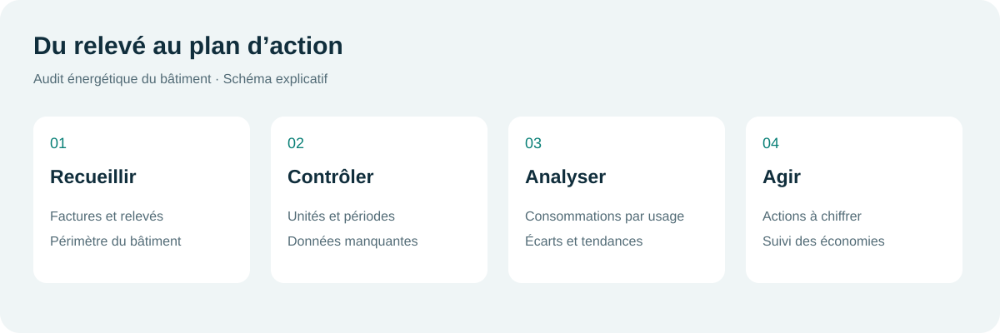
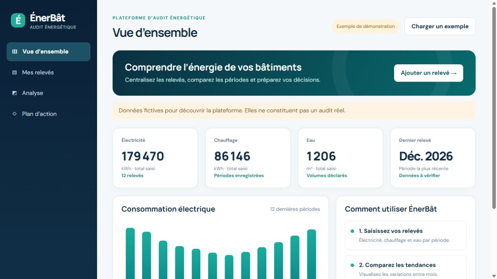
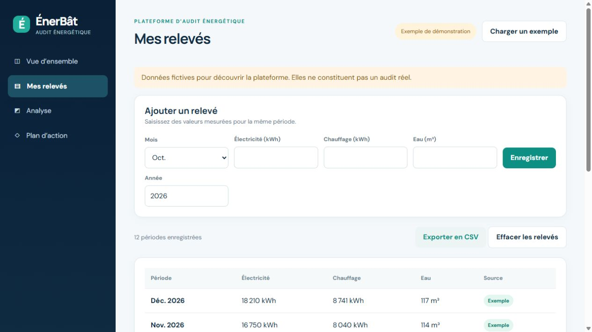
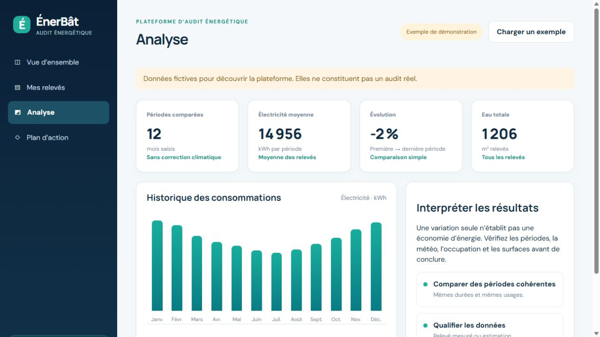
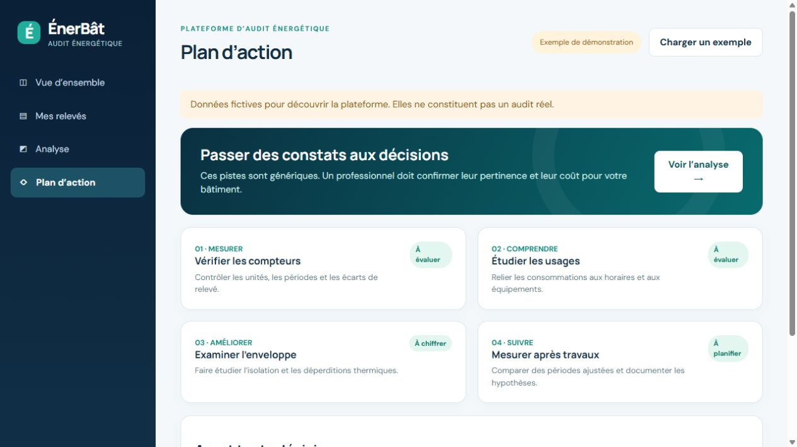
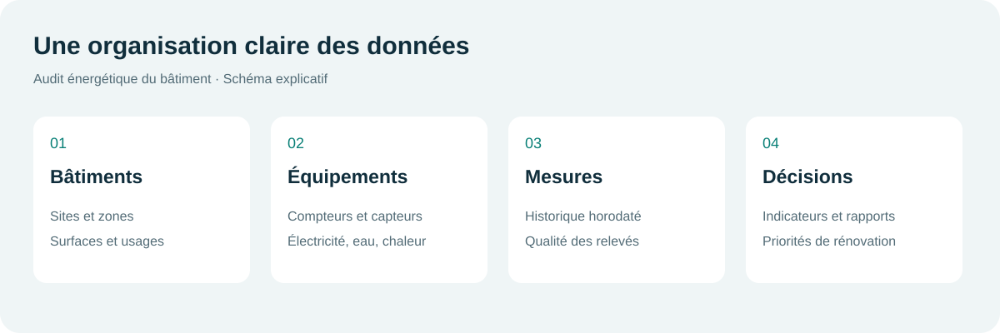

ECAM-EPMI · Spécialité ISE · Dossier pédagogique
Étude d’un audit énergétique de bâtiment
Moustapha IBRAHIM DJAMA · Thomas DHUNARA · Mariel FRESNEL
Ce document décrit une méthode d’étude et affiche des maquettes de démonstration. Les chiffres illustrés sont fictifs, et l’application MyEMS jointe est incomplète. Aucun audit réel n’est présenté comme terminé.

Les quatre étapes de la démarche
Maquettes de démonstration
Les quatre images ci-dessous proviennent du dossier fourni. Elles illustrent des fonctionnalités envisageables et non des résultats mesurés sur un bâtiment.





Avant une étude réelle
Choisir un bâtiment, sa surface, la période d’analyse et les sources de données. Remplir ensuite la fiche de relevés, contrôler les unités et calculer les indicateurs à partir de mesures traçables.
Informations sur les composants manquants : état du projet. Origine du logiciel : crédits et droits.